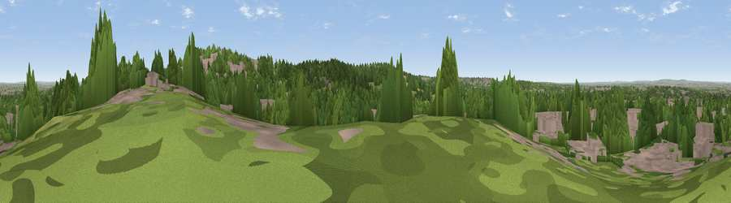

Viewpoint near Sydenham
#37479 in England · top 50% of its area beats it · near SydenhamThe view, rendered

A 360° render of this exact spot computed from the terrain model, tree cover and land cover — summer colours, afternoon light, calibrated against photographs of famous viewpoints. Real trees, hedges and buildings will differ in detail.
The panorama
Grey silhouette: terrain skyline in each direction (720 bearings, Earth curvature and refraction included). Dashed green: skyline with trees (+15 m) and buildings (+8 m) as obstacles. Blue strip: how far the ground is visible on each bearing.
Where the view opens
Wedge length = distance to the farthest visible ground on that bearing (vegetation-aware). Rings at 10, 25 and 50 km.
What fills the view
46% woodland · 42% built-up · 12% grassland
Angular shares of the visible panorama (visual magnitude), not map area. Landscape diversity 0.43 (0–1 Shannon).
Key numbers
More beautiful places nearby
The staircase of upgrades: each row has a higher view potential than everything closer. Driving times are estimates from straight-line distance, calibrated against real road routing — check an actual route before setting out.
| Place | Direction | Drive | Score |
|---|---|---|---|
| Viewpoint near Sydenham | ESE · 1 km | ~3 min | 48.5 |
| Viewpoint near Catford | ENE · 1 km | ~3 min | 51.4 |
| Viewpoint near Eltham | ENE · 9 km | ~18 min | 52.2 |
| Viewpoint near Woldingham | SSE · 17 km | ~30 min | 55.0 |
| Viewpoint near Woldingham | SSE · 19 km | ~32 min | 56.4 |
| Viewpoint near Tatsfield | SSE · 19 km | ~33 min | 61.0 |
| Viewpoint near Limpsfield | SSE · 19 km | ~33 min | 62.7 |
| Viewpoint near Limpsfield | SSE · 20 km | ~33 min | 66.0 |
51.44704, -0.06844 · source: screening · position refined by local search. Computed location — check access rights before visiting.